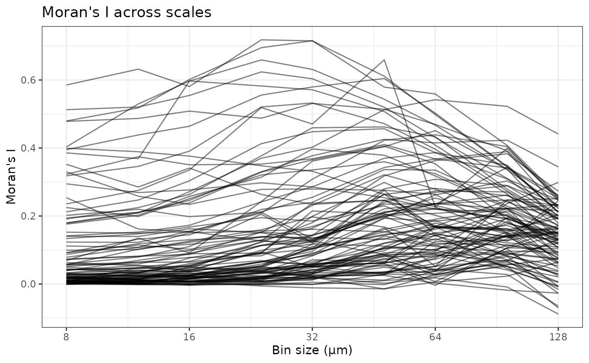
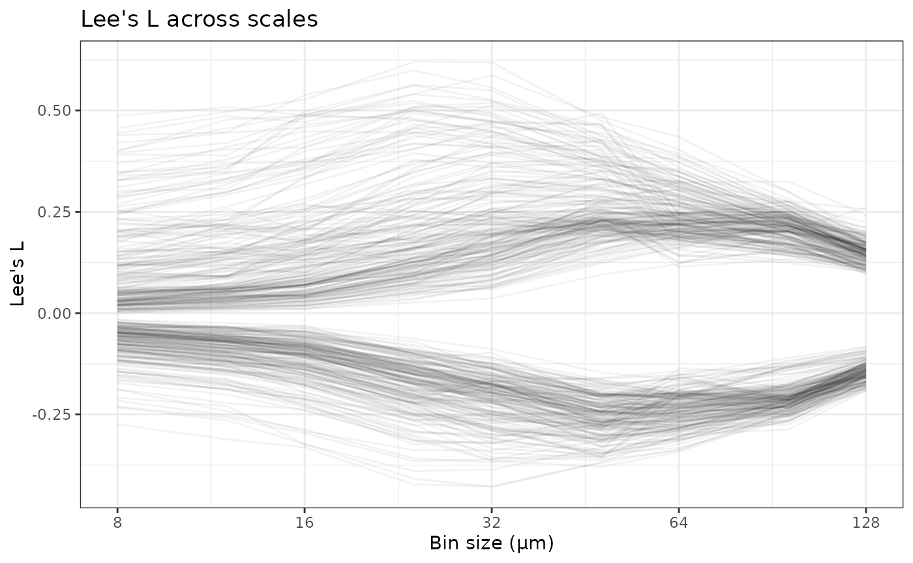
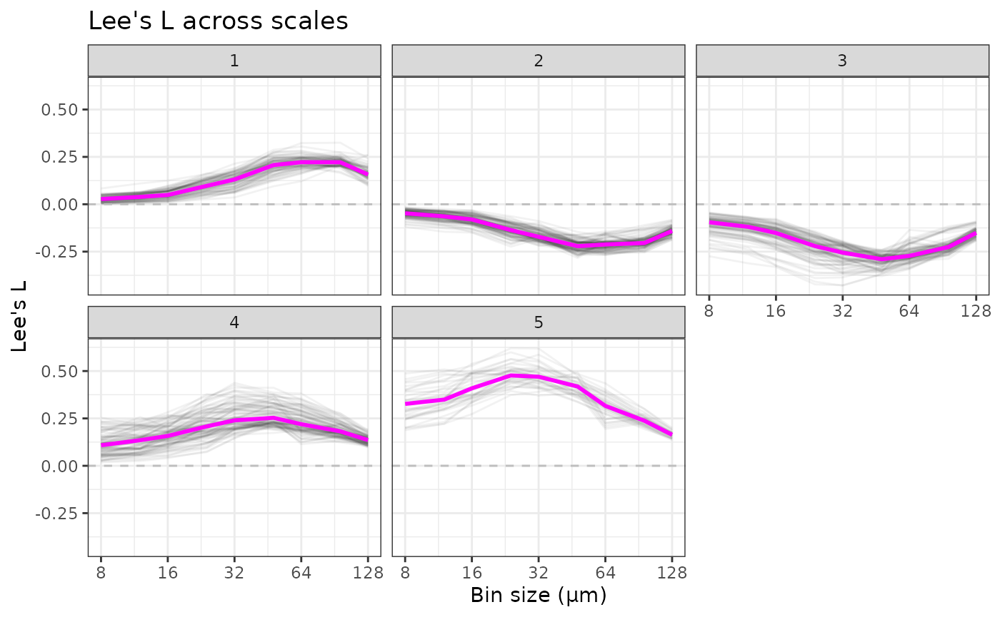

workflow
workflow.RmdIntroduction
In this vignette, we apply the multi-scale spatial analysis workflow as shown in the Wayfarer paper, but on a different dataset. This Xenium dataset is from the paper The mechanotransducer Piezo1 coordinates metabolism and inflammation to promote skin growth, which investigates glycolysis and inflammation in mouse skin expansion, mediated by Piezo1. Skin expansion was performed by injecting saline into a subdermal implant. This is relevant because skin expansion occurs in pregnancy and obesity, and is performed to create more skin for skin grafting. This dataset has two samples (I believe biological replica) per condition:
- Non-expanded – the implants were inserted but not expanded
- Expanded, 14 days post inflation (PI14)
- Expanded control (PI7)
- Expanded skin with topical Yoda1 treatment (PI7) which activates Piezo1
In this vignette, we perform a multi-scale spatial analysis with Wayfarer to identify genes and gene co-expression whose multi-scale spatial patterns differ across conditions.
Single sample
Creating spatial bins
First, we apply spatial aggregation of various bin sizes to one
sample and perform some basic analyses. You can do the same analyses and
visualizations on all the other samples. The tissue boundary was
computed from a concave hull of cell centroids as the images were not
provided by the authors. See
SpatialFeatureExperiment::getTissueBoundaryConcave(). For
the purpose of demonstration, we can start with sample
expanded1, one of the expanded skin samples 14 days post
injection.
The example dataset has been uploaded to OSF and can be downloaded with functions in the Wayfarer package.
tb <- Piezo1TissueBoundary(sample = "expanded1")
plot(st_geometry(tb))
Also download the transcript spots
(tx_path <- Piezo1TxSpots("expanded1"))
#> expanded1
#> "/home/runner/.cache/R/BiocFileCache/6e1616b1404b_expanded1.csv.gz"With the transcript spots, we can create spatial aggregates with a range of bin sizes (microns)
The tissue boundary is used to remove bins that are entirely outside tissue. Often there are transcript spots detected outside tissue. Also unlike in the Wayfarer paper, hexagonal bins rather than square ones are used here to show that hexagonal bins also work.
binned_path <- makeAggregates(tx_path,
out_path = "expanded1", sample_id = "expanded1",
tech = "Xenium", tissue_boundary = tb, sides = sides,
flip_geometry = FALSE,
square = TRUE, BPPARAM = MulticoreParam(4, progressbar = TRUE))Since this takes a while to run, for the purpose of rendering this vignette on GitHub Actions, the results have been uploaded to OSF and can be downloaded
(binned_path <- Piezo1Binned("expanded1"))
#> expanded1
#> "/home/runner/.cache/R/BiocFileCache/6e1673ff724f_expanded1.tar.gz"Decompress it into the current directory
untar(binned_path)Bins that overlap too little with tissue will be outliers in analyses
and cause artifacts, so here bins that overlap the tissue below a
proportion will be removed. These proportions were found by manual
tuning in the LUAD data used in the Wayfarer paper. Percentiles can also
be used with the quantiles argument. A value should be
supplied to each bin size.
The runBinAnalyses performs the basic analyses on each
bin size after removing bins that overlap too little with the
tissue:
- Log normalize the data, using proportion of each bin overlapping tissue as size factor instead of total counts. Using the proportion vs. total counts makes a big difference in downstream analyses.
- Non-spatial PCA on log normalized data
- Moran’s I on each gene, with log normalized data
- Lee’s L on all gene pairs, with log normalized data
runBinAnalyses("expanded1", "expanded1/bin_analyses", tissue_geometry = tb,
min_props = 0.8, queen = TRUE,
BPPARAM = MulticoreParam(2, progressbar = TRUE))Since the analyses can take a while to run, the results can also be downloaded from OSF
(bin_analyses_path <- Piezo1BinAnalyses("expanded1"))
#> expanded1
#> "/home/runner/.cache/R/BiocFileCache/6e162ba40ab9_expanded1_esda.tar.gz"
untar(bin_analyses_path)Moran’s I curves
Next see how Moran’s I changes with bin sizes in this sample
df_moran <- read_csv("expanded1/bin_analyses/df_moran.csv")
#> Rows: 900 Columns: 4
#> ── Column specification ────────────────────────────────────────────────────────
#> Delimiter: ","
#> chr (2): gene, sample
#> dbl (2): moran, side
#>
#> ℹ Use `spec()` to retrieve the full column specification for this data.
#> ℹ Specify the column types or set `show_col_types = FALSE` to quiet this message.
plotMoranCurves(df_moran)
Here each gene has a curve. We see different kinds of curves: some genes have higher Moran’s I at small scales that decrease at larger scales. Some form a peak between 16 and 32 microns in bin diameter. Some form a peak between 64 and 128 microns. We can cluster the curves to better visualize these different patterns:
df_moran2 <- clusterMoranCurves(df_moran)
names(df_moran2)
#> [1] "moran" "gene" "side" "sample" "hclust"
#> [6] "leiden" "hclust_diffs" "leiden_diffs"Hierarchical clustering and Leiden are used to cluster the curves, both the original values and differences between adjacent bin sizes (hclust_diffs and leiden_diffs).
Plot the clusters
plotMoranCurves(df_moran2, facet_by = "leiden")
Clusters 1 and 4 likely have no actual spatial structure.
Plot the cluster medians
plotClusterMedians(df_moran2, "leiden")
Plot the Moran’s I curves with the mean and variance of Moran’s I under the null hypothesis of no spatial autocorrelation, and the 2.5% and 97.5% quantiles after Bonferroni correction for the number of genes and bin sizes
# Need to read all bin sizes for the spatial neighborhood graphs
sfes <- readBins("expanded1/bin_analyses", sides = sides)
#> >>> Reading SpatialExperiment
#> >>> Reading colgeometries
#> >>> Reading spatial graphs
#> >>> Reading SpatialExperiment
#> >>> Reading colgeometries
#> >>> Reading spatial graphs
#> >>> Reading SpatialExperiment
#> >>> Reading colgeometries
#> >>> Reading spatial graphs
#> Warning in sn2listw(df, style = style, zero.policy = zero.policy,
#> from_mat2listw = TRUE): neighbour object has 3 sub-graphs
#> Warning in mat2listw(as(altReadObject(dddd), "CsparseMatrix"), style =
#> method$args$style, : neighbour object has 3 sub-graphs
#> >>> Reading SpatialExperiment
#> >>> Reading colgeometries
#> >>> Reading spatial graphs
#> >>> Reading SpatialExperiment
#> >>> Reading colgeometries
#> >>> Reading spatial graphs
#> >>> Reading SpatialExperiment
#> >>> Reading colgeometries
#> >>> Reading spatial graphs
#> >>> Reading SpatialExperiment
#> >>> Reading colgeometries
#> >>> Reading spatial graphs
#> >>> Reading SpatialExperiment
#> >>> Reading colgeometries
#> >>> Reading spatial graphs
#> >>> Reading SpatialExperiment
#> >>> Reading colgeometries
#> >>> Reading spatial graphs
mean_vars <- getMoranMeanVar(sfes, "moran")
plotMoranCurves(df_moran2, facet_by = "leiden", mean_vars = mean_vars,
show_null = TRUE)
Lee’s L curves
Also read Lee’s L; to make clustering easier, a cutoff of 0.2 is set so that gene pairs with Lee’s L lower than 0.2 in all bin sizes will be removed.
df_lee <-readLeeSamples("expanded1/bin_analyses", cutoff = 0.2)Due to the large number of gene pairs, a smaller subset can be plotted to prevent the plot from becoming a solid block
plotLeeCurves(df_lee)
Here each gene pair has a curve. Some gene pairs have higher Lee’s L at smaller scales which decrease at larger scales. Some peak between 16 and 32 microns. Some peak between 64 and 128 microns. Some have low Lee’s L at small scales which increase at larger scales. Some have negative Lee’s L at small scales which become positive at larger scales. Some have weakly negative Lee’s L at smaller scales which becomes lower at intermediate scales.
Cluster Lee’s L curves to better visualize these patterns
df_lee2 <- clusterLeeCurves(df_lee)
plotLeeCurves(df_lee2, facet_by = "leiden", show_median = TRUE) +
geom_hline(yintercept = 0, linetype = 2, color = "gray")
plotClusterMedians(df_lee2, "leiden")
Unfotunately we can’t plot that interval under null hypothesis like in Moran’s I because the mean and variance of Lee’s L under the null hypothesis of no spatial autocorrelation differ for each gene pair, depending on their Pearson correlation. When there’s no spatial pattern, gene pairs with high Pearson correlation can still get a moderate value away from 0. In addition, computing such mean and variance requires a dense square matrix, so they can only be computed for larger bin sizes where the number of bins is smaller.
Plotting multiple bin sizes
Here we plot gene expression in space in different bin sizes
# Reduce empty space
for (i in seq_along(sfes)) {
sfes[[i]] <- rotateMinRect(sfes[[i]])
}Randomly select a gene from Leiden cluster 4

We can also make this kind of plot for Lee’s L, with a bivariate palette. Randomly select a gene pair
set.seed(29)
pair_use <- df_lee2 |>
filter(leiden == 4) |>
pull(pair) |>
sample(1) |>
str_split(pattern = "_", simplify = TRUE) |>
as.vector()
plotSFEsBiscale(sfes[c("16", "48", "96")], pair_use[1], pair_use[2],
df_lee = df_lee, ncol = 1, legend_index = 1,
heights = rep(1, 5))
Multiple samples
After seeing the Moran’s I and Lee’s L curves for one sample, one may say, “Interesting, so what?” So we’ll compare these curves across multiple biological conditions and see what genes and gene pairs differ in this multi-scale manner that may not be apparent when only one spatial scale is analyzed. Here we get which sample is from which biological condition
data("sample_info")
sample_info
#> # A tibble: 8 × 2
#> sample condition
#> <chr> <chr>
#> 1 expanded1 PI14
#> 2 expanded2 PI14
#> 3 expanded1_pi7 PI7
#> 4 expanded2_pi7 PI7
#> 5 nonexpanded1 non-expanded
#> 6 nonexpanded2 non-expanded
#> 7 yoda1 Yoda1
#> 8 yoda2 Yoda1The method to find what’s different across stages is currently subject to change.
unlink(sample_info$sample, recursive = TRUE)Session info
sessionInfo()
#> R version 4.6.1 (2026-06-24)
#> Platform: x86_64-pc-linux-gnu
#> Running under: Ubuntu 24.04.4 LTS
#>
#> Matrix products: default
#> BLAS: /usr/lib/x86_64-linux-gnu/openblas-pthread/libblas.so.3
#> LAPACK: /usr/lib/x86_64-linux-gnu/openblas-pthread/libopenblasp-r0.3.26.so; LAPACK version 3.12.0
#>
#> locale:
#> [1] LC_CTYPE=C.UTF-8 LC_NUMERIC=C
#> [3] LC_TIME=C.UTF-8 LC_COLLATE=C.UTF-8
#> [5] LC_MONETARY=C.UTF-8 LC_MESSAGES=C.UTF-8
#> [7] LC_PAPER=C.UTF-8 LC_NAME=C.UTF-8
#> [9] LC_ADDRESS=C.UTF-8 LC_TELEPHONE=C.UTF-8
#> [11] LC_MEASUREMENT=C.UTF-8 LC_IDENTIFICATION=C.UTF-8
#>
#> time zone: UTC
#> tzcode source: system (glibc)
#>
#> attached base packages:
#> [1] stats graphics grDevices utils datasets methods base
#>
#> other attached packages:
#> [1] R.utils_2.13.0 R.oo_1.27.1
#> [3] R.methodsS3_1.8.2 tidyr_1.3.2
#> [5] purrr_1.2.2 stringr_1.6.0
#> [7] ggplot2_4.0.3 readr_2.2.0
#> [9] dplyr_1.2.1 alabaster.sfe_1.5.0
#> [11] alabaster.base_1.13.2 BiocParallel_1.47.0
#> [13] sf_1.1-2 Voyager_1.15.2
#> [15] SpatialFeatureExperiment_1.13.2 Wayfarer_0.99.0
#> [17] BiocStyle_2.41.0
#>
#> loaded via a namespace (and not attached):
#> [1] fs_2.1.0 matrixStats_1.5.0
#> [3] spatialreg_1.4-3 bitops_1.1-0
#> [5] EBImage_4.55.2 httr_1.4.8
#> [7] RColorBrewer_1.1-3 insight_1.5.2
#> [9] numDeriv_2016.8-1.1 tools_4.6.1
#> [11] backports_1.5.1 utf8_1.2.6
#> [13] R6_2.6.1 HDF5Array_1.41.1
#> [15] rhdf5filters_1.25.4 withr_3.0.3
#> [17] sp_2.2-3 cli_3.6.6
#> [19] Biobase_2.73.2 textshaping_1.0.5
#> [21] performance_0.17.1 RBioFormats_1.13.0
#> [23] sandwich_3.1-3 labeling_0.4.3
#> [25] marginaleffects_0.32.0 alabaster.se_1.13.0
#> [27] sass_0.4.10 mvtnorm_1.4-2
#> [29] arrow_25.0.0 S7_0.2.2
#> [31] proxy_0.4-29 pkgdown_2.2.1
#> [33] systemfonts_1.3.2 scico_1.5.0
#> [35] limma_3.69.4 RSQLite_3.53.3
#> [37] httpcode_0.3.0 generics_0.1.4
#> [39] vroom_1.7.1 car_3.1-5
#> [41] spdep_1.4-2 scrapper_1.7.4
#> [43] Matrix_1.7-5 S4Vectors_0.51.6
#> [45] abind_1.4-8 terra_1.9-34
#> [47] lifecycle_1.0.5 multcomp_1.4-31
#> [49] yaml_2.3.12 edgeR_4.11.6
#> [51] carData_3.0-6 SummarizedExperiment_1.43.0
#> [53] rhdf5_2.57.9 SparseArray_1.13.2
#> [55] BiocFileCache_3.3.0 grid_4.6.1
#> [57] blob_1.3.0 dqrng_0.4.1
#> [59] crayon_1.5.3 alabaster.spatial_1.13.0
#> [61] lattice_0.22-9 beachmat_2.29.0
#> [63] magick_2.9.1 zeallot_0.2.0
#> [65] pillar_1.11.1 knitr_1.51
#> [67] GenomicRanges_1.65.1 rjson_0.2.23
#> [69] osfr_0.2.9 boot_1.3-32
#> [71] estimability_2.0.0 sfarrow_0.4.1
#> [73] codetools_0.2-20 wk_0.9.5
#> [75] glue_1.8.1 data.table_1.18.4
#> [77] memuse_4.2-3 urltools_1.7.3.1
#> [79] vctrs_0.7.3 png_0.1-9
#> [81] Rdpack_2.6.6 gtable_0.3.6
#> [83] assertthat_0.2.1 cachem_1.1.0
#> [85] xfun_0.60 rbibutils_2.4.1
#> [87] S4Arrays_1.13.0 DropletUtils_1.33.0
#> [89] Seqinfo_1.3.0 coda_0.19-4.1
#> [91] reformulas_0.4.4 survival_3.8-6
#> [93] SingleCellExperiment_1.35.2 sfheaders_0.4.5
#> [95] rJava_1.0-18 units_1.0-1
#> [97] statmod_1.5.2 bluster_1.23.0
#> [99] TH.data_1.1-5 nlme_3.1-169
#> [101] bit64_4.8.2 alabaster.ranges_1.13.0
#> [103] filelock_1.0.3 bslib_0.12.0
#> [105] afex_1.5-1 KernSmooth_2.23-26
#> [107] otel_0.2.0 spData_2.3.5
#> [109] BiocGenerics_0.59.11 DBI_1.3.0
#> [111] tidyselect_1.2.1 emmeans_2.0.4
#> [113] bit_4.6.0 compiler_4.6.1
#> [115] curl_7.1.0 httr2_1.3.0
#> [117] BiocNeighbors_2.7.2 h5mread_1.5.0
#> [119] xml2_1.6.0 desc_1.4.3
#> [121] DelayedArray_0.39.4 triebeard_0.4.1
#> [123] bookdown_0.47 scales_1.4.0
#> [125] classInt_0.4-11 tiff_0.1-12
#> [127] SpatialExperiment_1.23.0 digest_0.6.39
#> [129] fftwtools_0.9-11 minqa_1.2.8
#> [131] alabaster.matrix_1.13.1 rmarkdown_2.31
#> [133] XVector_0.53.0 htmltools_0.5.9
#> [135] pkgconfig_2.0.3 jpeg_0.1-11
#> [137] lme4_2.0-6 sparseMatrixStats_1.25.0
#> [139] MatrixGenerics_1.25.0 dbplyr_2.6.0
#> [141] fastmap_1.2.0 rlang_1.3.0
#> [143] htmlwidgets_1.6.4 DelayedMatrixStats_1.35.0
#> [145] farver_2.1.2 jquerylib_0.1.4
#> [147] zoo_1.9-0 biscale_1.1.0
#> [149] jsonlite_2.0.0 RCurl_1.98-1.19
#> [151] magrittr_2.0.5 Formula_1.2-6
#> [153] scuttle_1.23.1 s2_1.1.11
#> [155] patchwork_1.3.2 Rhdf5lib_2.1.0
#> [157] Rcpp_1.1.2 ggnewscale_0.5.2
#> [159] stringi_1.8.9 alabaster.schemas_1.13.0
#> [161] MASS_7.3-65 plyr_1.8.9
#> [163] parallel_4.6.1 deldir_2.0-4
#> [165] splines_4.6.1 hms_1.1.4
#> [167] locfit_1.5-9.12 igraph_2.3.3
#> [169] reshape2_1.4.5 stats4_4.6.1
#> [171] LearnBayes_2.15.2 crul_1.6.0
#> [173] evaluate_1.0.5 BiocManager_1.30.27
#> [175] tzdb_0.5.0 nloptr_2.2.1
#> [177] alabaster.sce_1.13.0 e1071_1.7-17
#> [179] RSpectra_0.16-2 class_7.3-23
#> [181] ragg_1.5.2 tibble_3.3.1
#> [183] lmerTest_3.2-1 memoise_2.0.1
#> [185] IRanges_2.47.2 cluster_2.1.8.2